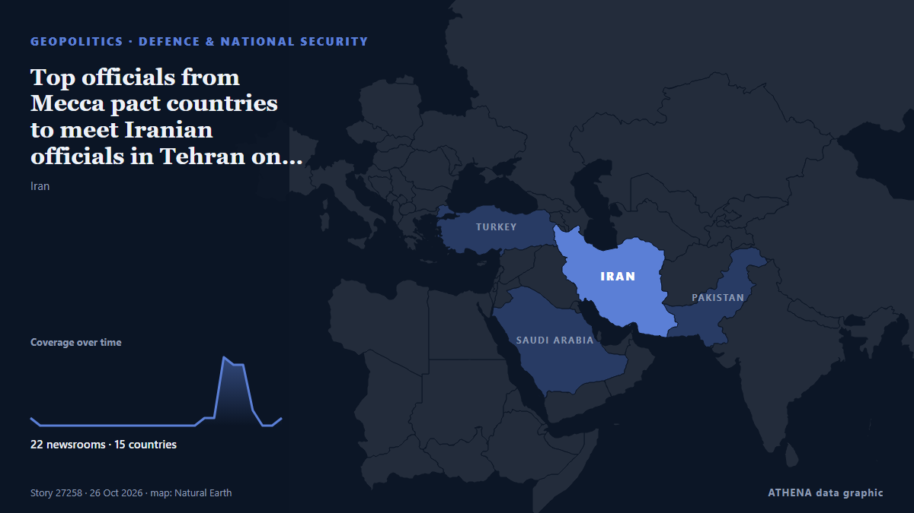

Top officials from Mecca pact countries to meet Iranian officials in Tehran on Monday, two sources say

Pakistan ratifies Mecca pact as Saudi Arabia faces attacks and Israel holds military drills Submitted by MEE staff on Sat, 10/24/2026 - 10:25 Saudi authorities have lifted recent security alerts… από Middle East Eye
Αναφέρθηκε ανεξάρτητα από 22 μέσα σε 15 χώρες από τις 24 Οκτ, πρώτο από το Middle East Eye· η κάλυψη εξασθενεί. Το ATHENA εκτιμά τον κίνδυνο χαμηλό (1.6/10), κυρίως λόγω της σοβαρότητας της βλάβης που περιγράφεται και της γεωγραφικής και τομεακής εμβέλειάς του. Η βεβαιότητα είναι 90% (υψηλή), καθώς το επιβεβαιώνουν 22 ανεξάρτητα μέσα με μέση αξιοπιστία πηγών 77%. Ποιοι το ανέφεραν: 4 μέσα στη χώρα Πακιστάν · Pakistan, 3 μέσα στη χώρα Ιράν · Iran, 2 μέσα στη χώρα Ομάν · Oman. Η κάλυψη διήρκεσε από 24 Οκτ έως 26 Οκτ, 52 ώρες.
Γιατί έχει σημασία: Οι εξελίξεις στην ασφάλεια και τη διπλωματία μπορούν να μετατοπίσουν συμμαχίες, εμπόριο και αγορές πολύ πέρα από τις χώρες που εμπλέκονται.
Τι άλλαξε: 30 νέες αναφορές από 22 μέσα στο 24ωρο έως 26 Οκτ.
Οι τίτλοι των ειδήσεων παρουσιάζονται στα αγγλικά, όπως δημοσιεύτηκαν.
Με μια ματιά
Επιλέγεται, βαθμολογείται και γράφεται από τη δημοσιευμένη μεθοδολογία του ATHENA. Κανένας συντάκτης δεν παρεμβαίνει σε μεμονωμένα γεγονότα. Πώς παράγεται ›
| 24 Oct 10:49 UTC | 1 |
|---|---|
| 24 Oct 12:49 UTC | 0 |
| 24 Oct 14:49 UTC | 0 |
| 24 Oct 16:49 UTC | 0 |
| 24 Oct 18:49 UTC | 0 |
| 24 Oct 20:49 UTC | 0 |
| 24 Oct 22:49 UTC | 0 |
| 25 Oct 00:49 UTC | 0 |
| 25 Oct 02:49 UTC | 0 |
| 25 Oct 04:49 UTC | 0 |
| 25 Oct 06:49 UTC | 0 |
| 25 Oct 08:49 UTC | 0 |
| 25 Oct 10:49 UTC | 0 |
| 25 Oct 12:49 UTC | 0 |
| 25 Oct 14:49 UTC | 0 |
| 25 Oct 16:49 UTC | 0 |
| 25 Oct 18:49 UTC | 0 |
| 25 Oct 20:49 UTC | 0 |
| 25 Oct 22:49 UTC | 1 |
| 26 Oct 00:49 UTC | 1 |
| 26 Oct 02:49 UTC | 9 |
| 26 Oct 04:49 UTC | 8 |
| 26 Oct 06:49 UTC | 8 |
| 26 Oct 08:49 UTC | 2 |
| 26 Oct 10:49 UTC | 0 |
| 26 Oct 12:49 UTC | 0 |
| 26 Oct 14:49 UTC | 1 |
| 24 Oct 12:54 UTC | 0.9 |
|---|---|
| 26 Oct 06:22 UTC | 1.8 |
| 26 Oct 15:06 UTC | 1.6 |
Γιατί αυτοί οι αριθμοί
Σημασία
Κίνδυνος
Βεβαιότητα
Η κάλυψη — ποιος το ανέφερε και πότε
ο τίτλος όπως δημοσιεύτηκε · ανοίγει το πρωτότυπο- Middle East Eye · INTPakistan ratifies Mecca pact as Saudi Arabia faces attacks and Israel holds military drills
- Express Tribune · Πακιστάν · PakistanIran says US ‘not serious’ about talks, rejects claims over nuclear programme
- Oman Observer · Ομάν · OmanOfficials from Mecca pact countries to meet Iranian officials
- Oman Observer · Ομάν · OmanIran to hold security talks with Saudi, Pakistan, Turkiye
- Middle East Eye · INTReport: Leading officials from Mecca pact to meet Iranian officials in Tehran
- The Straits Times · Σιγκαπούρη · SingaporeOfficials from Mecca pact countries to meet Iranian officials on Oct 26, two sources say
- Business Recorder · Πακιστάν · PakistanOfficials from Makkah pact countries to meet Iranian officials on Monday, two sources say
- Al-Monitor · Ηνωμένες Πολιτείες · United StatesOfficials from Mecca pact countries to meet Iranian officials in Tehran
- The Jerusalem Post · Ισραήλ · IsraelTop officials from Mecca pact countries to meet Iranian officials in Tehran, two sources say
- Mehr News (English) · Ιράν · IranTehran to host Saudi, Turkish, Pakistani officials
- Kurdistan24 (English) · Ιράκ · IraqIran Hosts Mecca Alliance members In Tehran Security Summit
- Arab News · Σαουδική Αραβία · Saudi ArabiaSaudi defense minister leads delegation attending Makkah pact countries’ meeting with Iran
- Times of India · Ινδία · IndiaMecca country officials to hold joint meeting in Tehran; discuss regional security
- The National · Ηνωμένα Αραβικά Εμιράτα · United Arab EmiratesSaudi Defence Minister leads Makkah pact delegation to Tehran in major diplomatic push
- IRNA (English) · Ιράν · IranTehran to host Saudi, Turkish, Pakistani top officials: Official
- Express Tribune · Πακιστάν · PakistanMakkah alliance, Iran agree to continue dialogue for bolstering cooperation in regional peace, security
- The Daily Star — page reader · Μπανγκλαντές · BangladeshOfficials from Makkah pact countries to meet Iranian officials on Monday, two sources say
- Mehr News (English) · Ιράν · IranIran, Mecca Defence Alliance states to hold talks today
- Cyprus Mail · Κύπρος · CyprusSaudi Arabia, Turkey and Pakistan to hold Iran talks amid rising tensions
- Anadolu Agency (English) · Τουρκία · TurkeySenior Turkish, Saudi, Pakistani officials to visit Iran for security talks
- Middle East Eye · INTIran's Bagheri confirms top officials from Mecca Pact countries' visit to Tehran
- Dawn · Πακιστάν · PakistanMakkah defence pact officials to visit Tehran today: Iranian state media
- The New Arab · INTIran to meet with Saudi, Pakistan, Turkey for security talks
- Shafaq News (English) · Ιράκ · IraqMecca Pact members to convene security talks in Iran
- Daily Maverick · Νότια Αφρική · South AfricaOfficials from Mecca pact countries to meet Iranian officials in Tehran on Monday
- CNA (Channel NewsAsia) · Σιγκαπούρη · SingaporeOfficials from Mecca pact countries to meet Iranian officials in Tehran
- APA (English) · Αζερμπαϊτζάν · AzerbaijanSenior representatives of Mecca Agreement countries conclude meeting with Iranian officials in Tehran - UPDATED